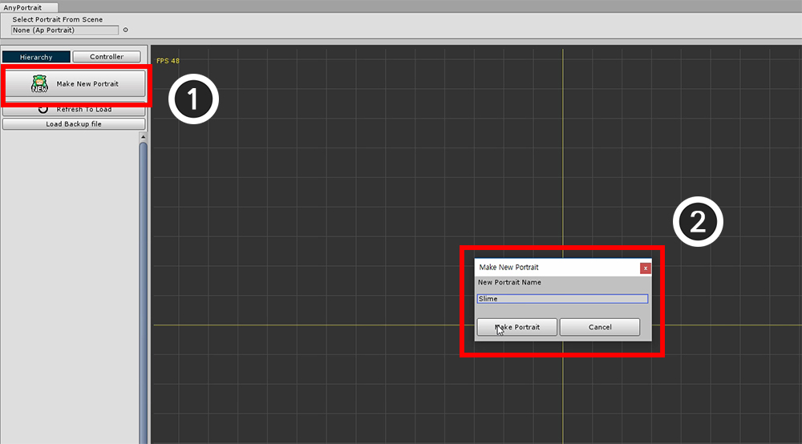
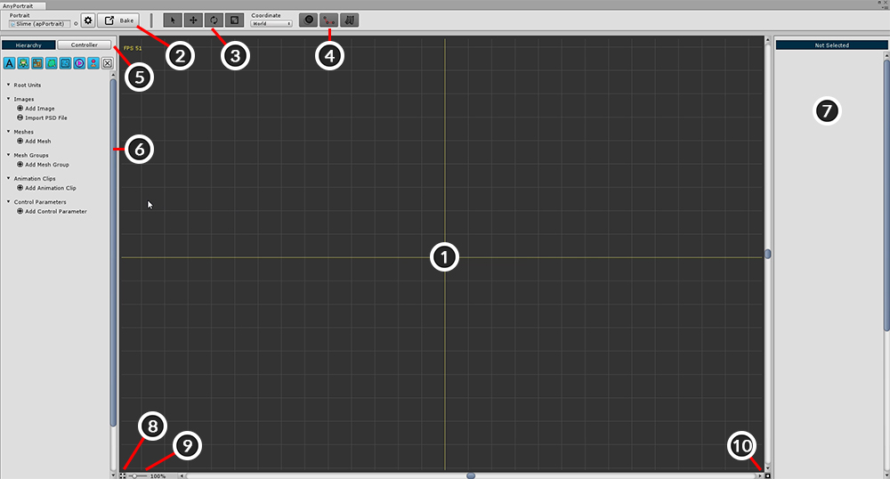

AnyPortrait > 시작하기 > 1.1. AnyPortrait 실행하고 apPortrait 생성하기
1.1. AnyPortrait 실행하고 apPortrait 생성하기
1.0.0
AnyPortrait를 유니티 AssetStore에서 다운받아서 설치를 합니다.
Unity 5.5 이상의 버전에서 사용이 가능합니다.

패키지를 설치했다면 상단 메뉴의 Window > AnyPortrait가 추가된 것을 볼 수 있습니다.
Window > AnyPortrait > 2D Editor를 눌러서 에디터를 실행합니다.
AnyPortrait v1.5.0부터는 Window > AnyPortrait > Open Editor로 메뉴 이름이 변경됩니다.

AnyPortrait를 실행한 첫 화면입니다.
1. 작업 공간 : 에디터에서 주요 작업이 이루어지는 곳입니다. 마우스 휠/휠 클릭 으로 이동/확대할 수 있습니다.
2. apPortrait 오브젝트 : 현재 작업 중인 apPortrait 오브젝트 입니다. 여기서 apPortrait를 교체/선택할 수 있습니다.
3. Make New Portrait : apPortrait를 생성합니다.
4. Refresh to Load : 씬에 존재하는 apPortrait의 목록을 갱신합니다. 갱신 후에는 버튼 하단에 열 수 있는 오브젝트들이 나타납니다.
5. Load Backup File : 백업파일을 열어서 apPortrait를 새로 생성합니다.

"Make New Portrait" 버튼을 눌러서 새로운 apPortrait 오브젝트를 생성합니다. 다이얼로그에서 이름을 입력합니다.


apPortrait를 생성하면 화면 상단과 좌측의 UI가 바뀌어있습니다. 각각의 기능은 다음과 같습니다.
1. 작업 공간 : 주요 작업이 이루어지는 곳입니다. 확대/축소( 마우스 휠 스크롤 ), 이동( 마우스 휠 버튼 드래그 )할 수 있습니다.
2. Setting, Bake 버튼 : apPortrait와 에디터의 설정을 바꾸는 다이얼로그를 열거나 내보내기(Bake)를 위한 다이얼로그를 엽니다.
3. Select, Move, Rotate, Scale 툴 : 형태를 바꾸는 수정 작업에 사용되는 툴 입니다. 단축키는 각각 Q, W, E, R 입니다.
4. Onion Skin, Bone, Physics Show/Hide 버튼 : 잔상, 본, 그리고 물리 효과를 화면에 출력할지를 결정합니다. 자주 사용되는 잔상 단축키는 O , 본 단축키는 B 입니다.
5. Hierarchy, Controller 탭 : 좌측 UI의 탭입니다. Hierarchy를 누르면 작업 중인 객체들이 보여지며, Controller을 누르면 등록된 컨트롤 파라미터(Control Parameter)들이 나옵니다.
6. Hierarchy : Hierarchy 선택시 나오는 UI입니다. 종류별로 객체들이 보여지며, 상단의 필터 버튼으로 특정 종류의 객체만 보이게 할 수 있습니다.
7. 상세 정보 UI : 우측 UI는 선택한 객체의 정보가 출력되는 구역입니다. 선택한 객체에 따라 최대 3 구역으로 구분되기도 합니다.
8. 작업 공간 최대화 : 상단과 좌우 UI를 숨기고 작업 공간을 크게 늘립니다. 단축키는 Alt+W 입니다.
9. Zoom : 화면의 확대/축소를 지정합니다. 마우스 휠 을 이용해서 제어할 수도 있습니다.
10. GUI 리셋 : 화면 스크롤과 확대/축소를 초기화합니다.

Setting 버튼을 누르면 위와 같은 다이얼로그가 나타납니다.
여기서 apPortrait의 이름을 바꾸거나 에디터의 언어, 색상을 바꿀 수 있습니다.
1. Portrait 탭 : 현재 편집 중인 apPortrait의 설정입니다.
- Name : 선택된 apPortrait의 이름을 수정합니다.
- Important / FPS : Important가 켜져 있으면 매 프레임마다 업데이트가 됩니다. (FPS가 무시됩니다.) 반대로 Important가 꺼져 있으면 성능 향상을 위해 지정된 FPS에 맞게 업데이트 됩니다. 게임에서 중요하지 않은 오브젝트라면 Important를 끄는 것을 추천합니다.
2. Editor 탭 : 에디터의 설정입니다.
- Language : 에디터의 언어를 지원합니다. 출시 버전을 기준으로 영어, 한국어, 프랑스어, 독일어, 스페인어, 덴마크어, 일본어, 중국어 (번체/간체)를 지원합니다.
- Show FPS / Statistics : 에디터의 FPS와 현재 작업 공간 상의 데이터를 표시합니다.
- Auto Backup Setting : 자동 백업을 설정합니다. 저장 시간과 경로를 지정할 수 있습니다.
- Pose Snapshot Setting : 애니메이션을 편집 할때 본의 자세를 저장할 수 있는데, 그 저장 파일의 경로를 설정합니다.
- 에디터 색상 : 에디터의 GUI 색상을 설정합니다. Default 버튼을 눌러서 각각의 기본 값으로 되돌릴 수 있습니다.
3. About 탭 : AnyPortrait와 에디터에 사용된 외부 라이브러리의 라이센스가 명시되어 있습니다.

Bake 버튼을 누르면 위와 같은 다이얼로그가 나타납니다.
AnyPortrait에서 작업한 결과를 씬에 반영하는 기능을 제공합니다.
1. Portrait : Bake 대상이 되는 apPortrait입니다.
2. Bake Scale : 씬에 적용되는 크기 비율입니다. 씬과 AnyPortrait의 좌표계가 서로 다르므로 적절하게 크기를 지정해야합니다.
3. Z Per Depth : 각각의 메시간의 Z 거리를 설정합니다. (값이 너무 작으면 Depth Fighting 문제가 생길 수 있습니다.)
4. Bake 버튼 : 씬으로 내보내어 적용합니다.
5. Optimized Baking Target : 최적화된 Bake의 대상입니다.
6. Optimized Bake : 실행 데이터만 Bake되어 최적화된 객체를 새로 복사하여 내보냅니다. 지정된 대상이 없으면 새로 생성합니다.